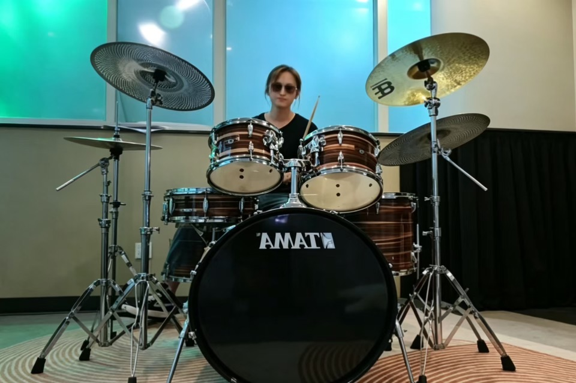
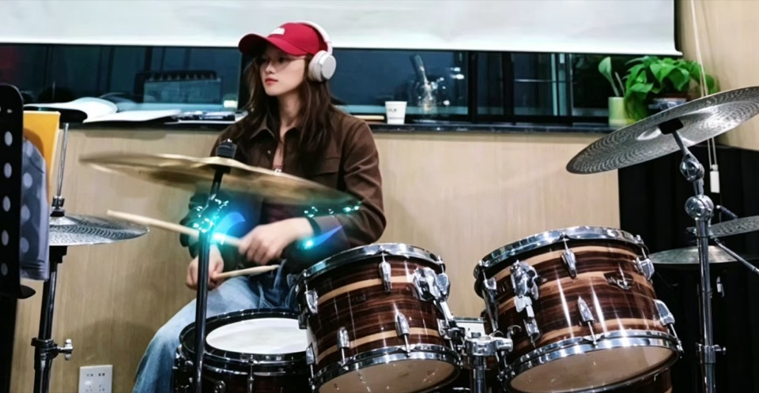
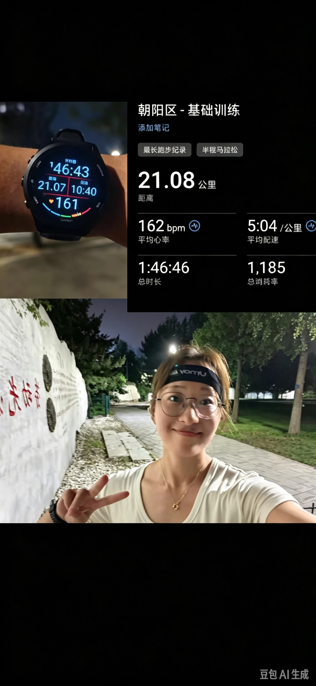
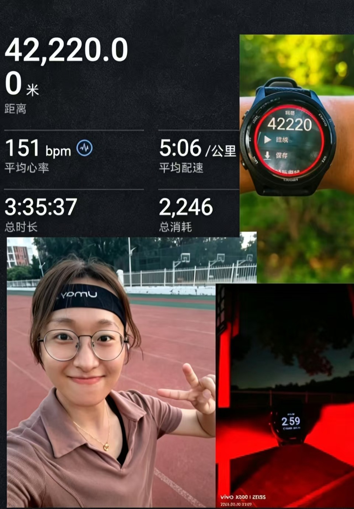

生活
不搞科研，我们可以一起。
点击照片可查看原图。
音乐 · 换个频道
实验讲究重复，练琴也是。偶尔换一种声音，继续保持好奇。
架子鼓


吉他
滤镜负责可爱，手指负责和弦。
跑步 · 出去转转
有些思路，坐着想不通，就出去跑一跑。


户外 · 去山里
田野调查做久了，山也想自己爬一爬。
不搞科研，我们可以一起。
点击照片可查看原图。
实验讲究重复，练琴也是。偶尔换一种声音，继续保持好奇。


滤镜负责可爱，手指负责和弦。
有些思路，坐着想不通，就出去跑一跑。


田野调查做久了，山也想自己爬一爬。